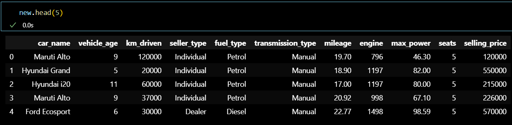
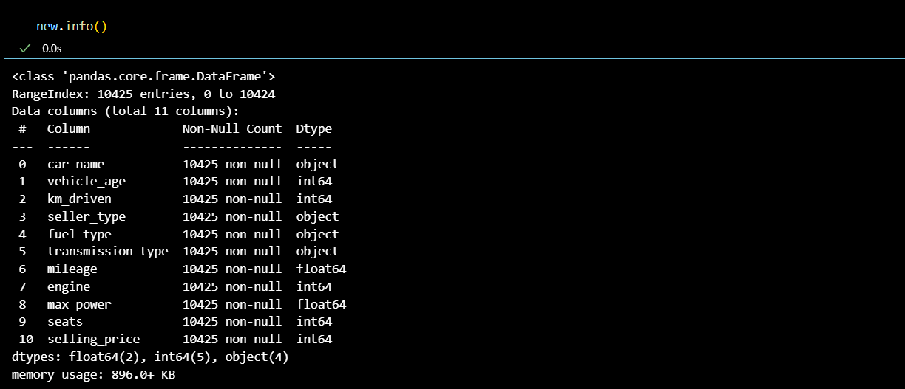
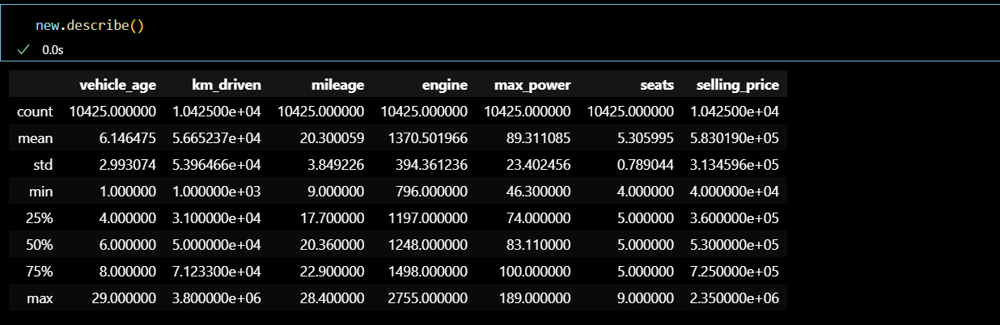

The used car market in India is a dynamic and ever-changing landscape. Prices can fluctuate wildly based on a variety of factors including the make and model of the car, its mileage, its condition and the current market conditions. As a result, it can be difficult for sellers to accurately price their cars.
This dataset contains information about used cars.
car_name
Car's Full name, which includes brand and specific model name.
vehicle_age
The count of years since car was bought.
km_driven
Total distance in kilometer car has traveled.
seller_type
Which Type of seller is selling the used car.
fuel_type
Fuel used in the used car, which was put up on sale.
transmission_type
Transmission used in the used car, which was put on sale.
mileage
It is the number of kilometer the car runs per litre.
engine
It is the engine capacity in cc(cubic centimeters).
max_power
Max power it produces in BHP.
seats
Total number of seats in car.
selling_price
The selling price of the car.
Here are the details of dataset, here new is the name of my DataFrame.
new.head(5)
The head() method returns a specified number of rows, string from the top. The head() method returns the first 5 rows if a number is not specified.
new.info()
The info() method prints information about the DataFrame. The information contains the number of columns, column labels, column data types, memory usage, range index, and the number of cells in each column (non-null values).
new.describe()
describe() method in Pandas is a convenient way to get a quick overview of your data. By default, it provides the count, mean, standard deviation, minimum, 25th percentile (Q1), median (50th percentile or Q2), 75th percentile (Q3), and maximum of the columns.